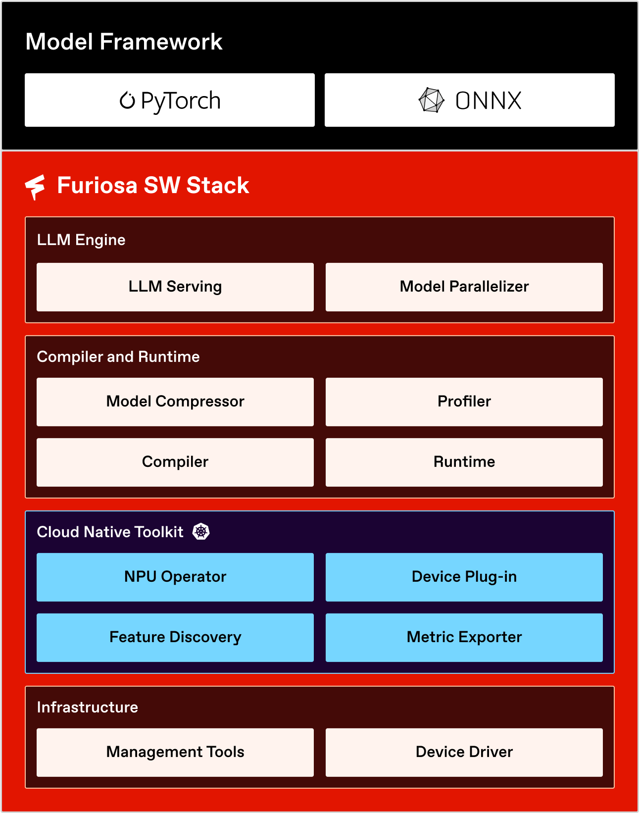

FuriosaAI의 소프트웨어 스택#
FuriosaAI는 다양한 응용 프로그램 및 환경 전반에 걸쳐 사용할 수있는 FuriosaAI NPU를 활성화 할 수있는 간소화 된 소프트웨어 스택을 제공합니다. 여기에 FuriosaAI에 의해 제공되는 소프트웨어 스택을 개요 및 자습서와 함께 각 구성 요소의 역할을 설명합니다. 다음 다이어그램은 FuriosaAI에 의해 제공 된 소프트웨어 스택을 보여줍니다.


Kernel Driver, Firmware 및 PE Runtime#
커널 장치 driver는 Linux 운영 체제를 활성화하여 NPU 장치를 인식하고 Linux 장치 파일로 노출합니다. firmware는 NPU에서 실행되며 low-level API를 PE Runtime (PERT)에 PEXQXQXQXQ를 관리하고 runtime를 관리하고 runtime를 관리합니다.
Furiosa Compiler#
Furiosa Compiler는 모델 그래프를 최적화하고 NPU에 대한 실행 가능한 프로그램을 생성합니다. graph-level 최적화, 운영자 융합, 메모리 할당 최적화, 스케줄링 및 cross-layer 데이터 운동의 최적화를 포함하여 여러 최적화를 수행합니다. 단일 모델은 모델의 아키텍처 및 응용 프로그램에 따라 여러 실행 가능한 여러 모델을 컴파일 할 수 있습니다.
FuriosaAI의 백엔드를 사용하는 경우 torch.compile() (FuriosaBackend), 또는 furiosa-llm 패키지, Furiosa Compiler는 NPU 실행을 생성하기 위해 투명하게 사용됩니다.
Furiosa Runtime#
Runtime는 Furiosa compiler에 의해 생성된 실행파일을 로드하고 NPU에 그들을 실행합니다. Runtime는 NPU 프로그램을 스케줄링하고 NPU와 호스트 RAM 모두에 할당하는 메모리를 할당하는 역할을 담당하고 있습니다. 또한 Runtime는 여러 NPU의 사용을 지원하며 NPU를 실행하는 여러 가지 항목에 대해 통합되지 않은 여러 항목들을 제공합니다.
Furiosa 모형 압축기 (Quantizer)#
Furiosa 모델 컴프레서는 모델 보정 및 quantization에 대한 툴킷입니다. 모델 quantization는 메모리 사용, 계산 비용, inference latency 및 전력 소비를 줄이기위한 강력한 기술입니다. Furiosa 모델 컴프레서는 post-training quantization 방법을 제공합니다.
BF16 (W16A16)
INT8, Weight-Only (W8A16) (예정)
FP8 (W8A8)
INT8 SmoothQuant (W8A8) (예정)
INT4 Weight-Only (W4A16 AWQ/GPTQ) (예정)
Furiosa-LLM#
Furiosa-LLM는 Llama 및 GPT-J와 같은 LLM 모델용 고성능 inference 엔진입니다. Furiosa-LLM의 주요 기능은 다음과 같습니다:
vLLM 호환 API, vLLM 기반 워크플로우와 원활한 통합;
PagedAttention는, 주의적인 계산을 위한 낙관한 기억 사용법을 위해;
연속 batching, 동적 그룹 inference 요청에 따라 throughput 개선;
Hugging Face 허브 지원, pre-trained 모델에 대한 액세스를 단순화;
OpenAI 호환 API 서버, 익숙한 API를 사용하여 쉽게 배포 할 수 있습니다.
더 많은 정보를 원하시면, 참고하세요 Furiosa-LLM 부문
Kubernetes 지원#
Kubernetes는 컨테이너화된 애플리케이션 및 서비스를 관리하는 오픈 소스 플랫폼으로, 강력한 기능을 통해 컨테이너화된 워크로드를 배포, 확장 및 자동화하는 데 널리 사용됩니다. FuriosaAI 소프트웨어 스택은 Kubernetes와의 원활한 통합을 제공하여 Kubernetes 환경 내에서 AI 애플리케이션의 배포 및 관리를 용이하게 합니다. FuriosaAI의 장치 플러그인은 Kubernetes 클러스터가 FuriosaAI의 NPUs를 인식하고 해당 워크로드에 대해 예약할 수 있도록 합니다. 이 통합은 FuriosaAI NPUs를 사용하여 AI 워크로드를 배포하는 것을 단순화하여 효율적인 리소스 활용 및 확장성을 보장합니다.
Kubernetes 지원에 대한 자세한 내용은 다음을 참조하십시오. 클라우드 네이티브 툴킷 부문